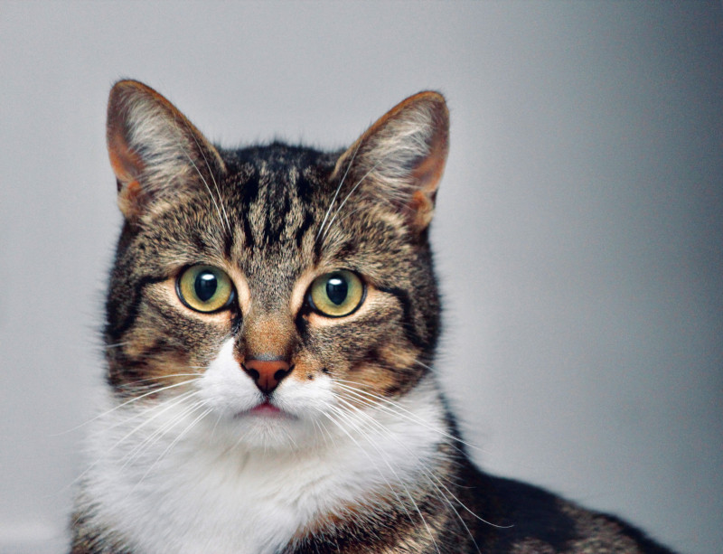

Котики та мікробики
У чому сила котиків?
Уміння приймати ласку та муркати – певною мірою є значною "владою" котів над своїми господарями. Ще одна "фіча" в плані комфорту для власників котів – уміння закопувати свої великі та малі справи у пісок.
До слова, еволюція цих тварин у нашій оселі відбувалася за всіма ознаками, у тому й числі, поведінковими.
Тож взяти додому якогось маленького представника диких котячих і очікувати, що виросте "грайливий гепардик" – не варто: інстинкти візьмуть своє і він все одно якось захоче вами пообідати. Та й уважні зоозахисники з цього приводу справедливо вам спокою не дадуть.
Про котяче муркання
Таке приємне нашому вуху муркотіння може звучати далеко не лише, коли коту добре. Муркання може бути елементом комунікації (особливо з кошенятами), способом заспокоїтися чи втамувати біль. Муркають лише малі домашні коти, а також пуми, рисі і гепарди. Великі котячі – леви, тигри, леопарди такого не вміють.
Про мікроби
Коти відомі тим, що є ексклюзивними господарями токсоплазм (Toxoplasma gondii) – лише коти можуть їх виділяти із екскрементами. У всіх інших тварин токсоплазма розселяється у тканинах і органах – тож джерелом зараження вони можуть виступати переважно лише при вживанні у їжу.
У кишківнику котів – високий рівень лінолевої кислоти (через дефіцит ферменту, який її розщеплює) і саме це робить "котів котами" "в очах" паразита: при експериментальному блокуванні цього ферменту у мишей токсоплазма починала розмножуватися і в кишківнику гризунів.
Ооцисти, які виділяються із котячими екскрементами, стають заразними через 1-5 днів після виділення, тож вчасне прибирання котячого горщика, може дещо зменшити ці ризики.
Головна загроза токсоплазмозу – для для людей із імунодефіцитами та вагітних, адже при первинному інфікуванні є високий ризик патологій плоду. Токсоплазмоз – найбільш поширена серед людей протозойна інфекція з латентним перебігом. Приблизно третина людей в світі мають імуноглобуліни G до цієї інфекції.
Існує чимало досліджень стосовно можливого впливу токсоплазм на поведінку ссавців, в тому числі, і людини.
Є дані, що заражені гризуни проявляють надмірну безстрашність та необережність по відношенню до котів, через що частіше стають їх жертвами (чого власне і "домагається" паразит).
Цікаво, що у вивченні інфікованих токсоплазмою вовків показано, що ті мають значно вищі шанси очолити зграю та заснувати свою власну, ніж їх неінфіковані родичі.
У деяких дослідженнях з людьми відмічено певний зв'язок величини титрів антитіл до токсоплазми із схильністю до необережного водіння автомобілем. Також є роботи, в яких "токсоплазма-позитивні" учасники з вищою ймовірністю починали свій власний бізнес, що теж пов'язано із відчуттям ризиків.
Із іншого боку, не варто і переоцінювати цей вплив на свою поведінку : підсумовуючи великий масив досліджень токсоплазми на поведінку гризунів і людей, дослідники визнають, що можлива зміна поведінки не є закономірним та істотно вираженим явищем і може залежати від генетичних факторів, штаму збудника та тривалості носійства інфекції. Тому звинуватити токсоплазму у своєму бажанні швидко проскочити на жовтий, ймовірно що не вдасться.
Що ж до менш загадкових інфекцій, які можуть нам дарувати котики, то їх доволі багато. Дуже коротко згадаємо про сказ та збудників деяких кишкових інфекцій.
Що стосується першого – тут безумовноважливою є вакцинація домашніх улюбленців, не залежно, гуляють вони самі по собі, чи ні.
З приводу ж другого – актуально дотримуватися загальних правил – миття рук, годування тварин належною їжею, тощо.
І звичайно ж, не можна не загадати про вклад домашніх пухнастиків у мікробіом своїх господарів. Очікувано, що чим більше тваринки гуляють "самі по собі", тим більше різноманітних мікробів вони можуть приносити своїм власникам. Виходячи із цього, найбільший вплив на мікробіоту людей мають все ж собаки. Далі – коти, які гуляють надворі, і коти, які безвилазно сидять в наших квартирах.
Для нашого імунітету важливо взаємодіяти із якомога більшою кількістю непатогенних мікроорганізмів. Таким чином, імунна система постійно "оновлює свою базу" і краще розрізняє "своїх" та "чужих". Особливо це може бути відчутно для дітей, в яких імунна система розвивається і "навчається". Домашні тварини, і коти в тому числі, можуть цьому сприяти.
У деяких дослідженнях було відмічено, що наявність кота в домі більше впливало на мікробіоту жінок, ніж чоловіків. При цьому кількість одних родин бактерій зростала, а інших зменшувалася.
Цікаво, що у власників котів спостерігалися деякі зміни в метаболізмі самого кишкового мікробіому, зокрема, підвищення активності синтезу вітамінів групи B та деяких амінокислот, підвищення метаболізму глюкози та утворення коротколанцюгових жирних кислот (SCFA – short chain fatty acids) – тих самих, які живлять епітеліоцити нашого кишківника і сприяють запобіганню запальних процесів у ньому.
Однак, все ж це не є підставою розглядати своїх котиків, як "пухнасті пробіотични добавки", а, в першу чергу – як харизматичних компаньйонів із дикими інстинктами, за яких ми одного разу взяли відповідальність.

Photo by Lloyd Henneman on Unsplash